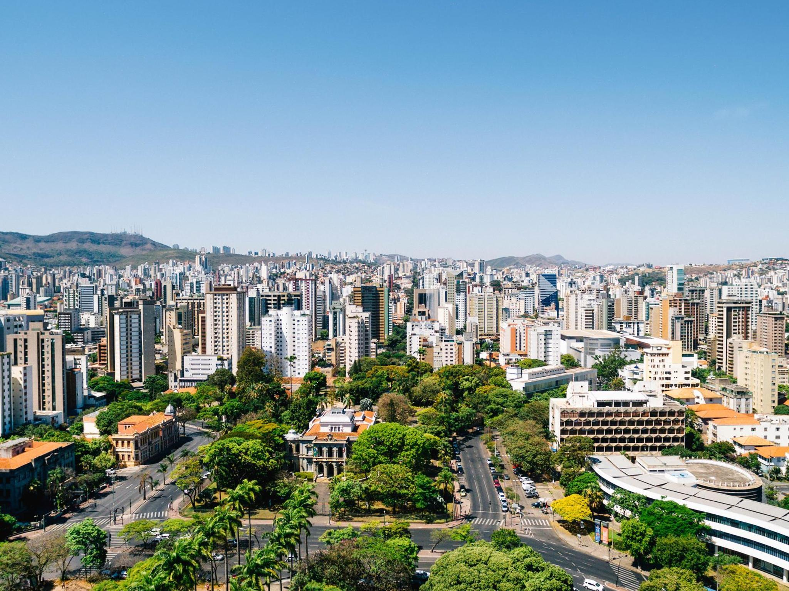

Lagoa da Pampulha
Um dos cartões-postais mais famosos da cidade. A região possui arquitetura moderna, áreas de lazer e a famosa Igreja São Francisco de Assis, projetada por Oscar Niemeyer.
A capital mineira da cultura, gastronomia e turismo urbano
Belo Horizonte é a capital de Minas Gerais e um dos principais destinos turísticos urbanos do Brasil. A cidade se destaca pela gastronomia mineira, vida cultural, parques, museus, bares, arquitetura moderna e pela hospitalidade do povo mineiro.
Conhecida como “BH”, a cidade reúne história, lazer, arte, música, gastronomia e diversas atrações para moradores e turistas.

Um dos cartões-postais mais famosos da cidade. A região possui arquitetura moderna, áreas de lazer e a famosa Igreja São Francisco de Assis, projetada por Oscar Niemeyer.
Um dos locais mais visitados de Belo Horizonte. O mercado reúne comidas típicas, artesanato, doces, queijo minas, cachaças, lembranças e produtos regionais.
Região cultural cercada por museus, jardins e prédios históricos. Um ótimo local para passeios, fotos e eventos culturais.
Um dos estádios mais famosos do Brasil, palco de grandes jogos, eventos esportivos e shows.
Grande área verde ideal para caminhadas, trilhas, piqueniques e contato com a natureza dentro da capital mineira.
Belo Horizonte é reconhecida nacionalmente pela sua culinária. A cidade possui centenas de bares e restaurantes tradicionais, sendo considerada uma das capitais dos botecos no Brasil.
Belo Horizonte já recebeu diversos títulos relacionados à gastronomia e é famosa pela cultura dos bares e botecos.
A cidade oferece uma grande variedade de atividades culturais, incluindo teatros, museus, cinemas, festivais de música, feiras e apresentações artísticas.
| Local | Destaque |
|---|---|
| Palácio das Artes | Shows, teatro e exposições |
| Centro Cultural Banco do Brasil | Eventos culturais e exposições |
| Museu de Artes e Ofícios | História e cultura brasileira |
| Feira Hippie | Artesanato e produtos regionais |
Belo Horizonte possui centros comerciais, feiras de artesanato, shoppings e mercados tradicionais que atraem turistas durante todo o ano.
| Informação | Detalhe |
|---|---|
| Estado | Minas Gerais |
| Tipo de turismo | Urbano, cultural e gastronômico |
| Principal destaque | Lagoa da Pampulha |
| Melhor experiência | Gastronomia e vida cultural |
“Belo Horizonte combina cultura, gastronomia e lazer em uma das capitais mais acolhedoras do Brasil.”